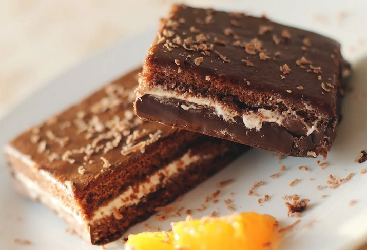

Brownies

Description
A classic. Note: final product won't match picture.
Ingredients
- 200 grams of butter
- 200 grams of dark chocolate
- 3 eggs
- 200 grams of sugar
- 100 grams of wheat flour
- 100 grams of chopped walnuts
- 0.5 teaspoons of salt
- 0.5 teaspoons of vanilla extract
Steps
- Cover the baking tray with cooking paper and heat the oven to 170 degrees Celsius.
- Melt the butter and chocolate.
- Whisk the eggs and sugar in a blender until foamy.
- Add the mixture of melted butter and chocolate and mix thoroughly.
- Add flour, salt, chopped walnuts and vanilla extract, mix thoroughly.
- Pour the dough into the tray and bake it in 170 degrees Celsius for 30-35 minutes, until the brownies look dry at the top.
- Let it cool a bit, then take it out of the tray and slice it in pieces.